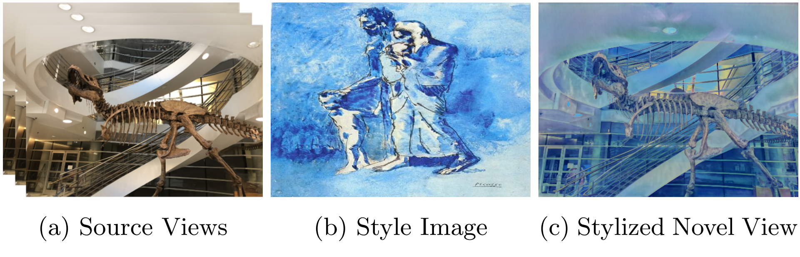
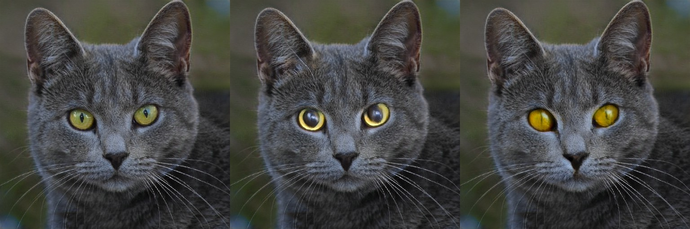
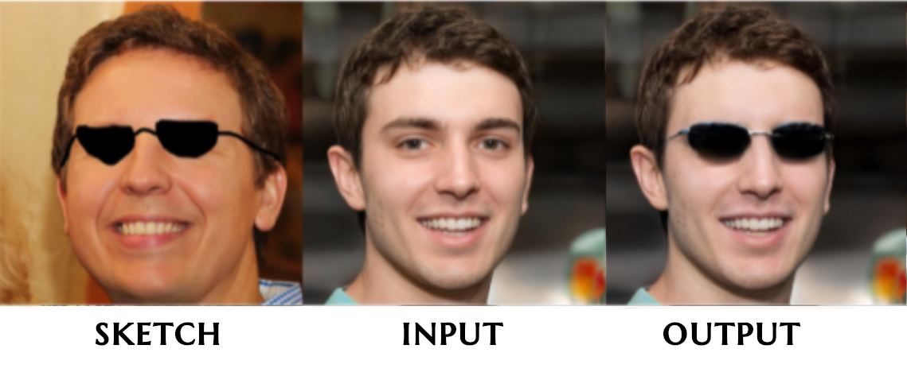
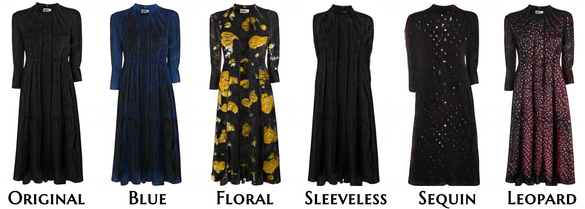
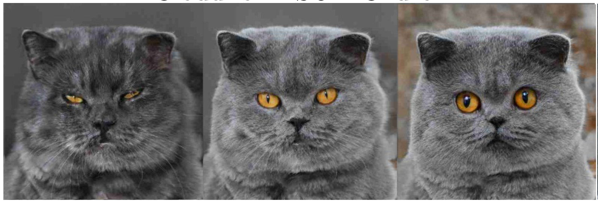
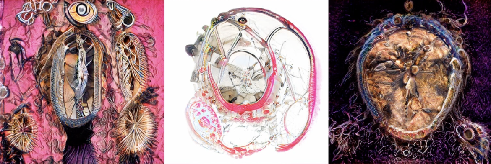

Umut Kocasarı

About Me
Hi, I’m Umut.
I am a PhD student in the Visual Computing and Artificial Intelligence Lab, supervised by Prof. Matthias Nießner.
I completed my Bachelor’s in Computer Engineering at Boğaziçi University and my Master’s in Computer Science at the Technical University of Munich.
My previous work focused on generative modeling and latent space manipulation in GANs.
My research interests include deep learning, computer graphics, and 3D reconstruction.
Key Topics: 3D Reconstruction, Generative Modeling, Geometric Deep Learning
You could see CV here.
Publications
-

GCPR G3DST: Generalizing 3D Style Transfer with Neural Radiance Fields across Scenes and StylesDAGM German Conference on Pattern Recognition (GCPR) , 2024 -

WACV Fantastic Style Channels and Where to Find Them: A Submodular Framework for Discovering Diverse Directions in GANsWinter Conference on Applications of Computer Vision (WACV) , 2023 -

CVPR Workshop PaintInStyle: One-Shot Discovery of Interpretable Directions by PaintingComputer Vision for Fashion, Art, and Design (CVPR Workshop) , 2022 -

CVPR Workshop Rank in Style: A Ranking-based Approach to Find Interpretable DirectionsComputer Vision for Fashion, Art, and Design (CVPR Workshop) , 2022 -

WACV StyleMC: Multi-Channel Based Fast Text-Guided Image Generation and ManipulationWinter Conference on Applications of Computer Vision (WACV) , 2022 -

NeurIPS Workshop Exploring Latent Dimensions of Crowd-sourced CreativityMachine Learning for Creativity and Design (NeurIPS Workshop) , 2021